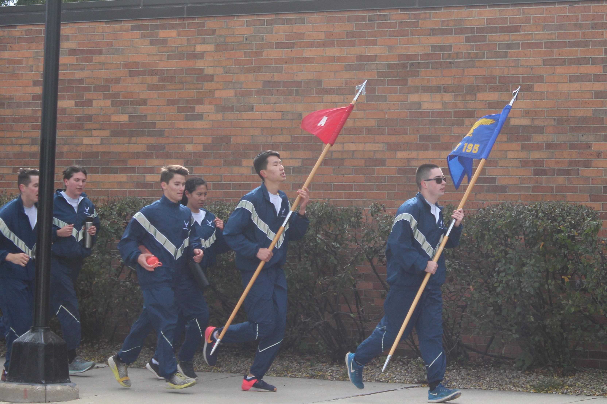
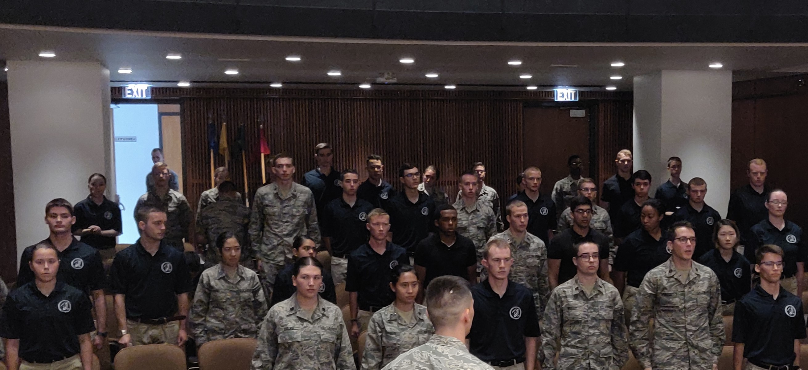
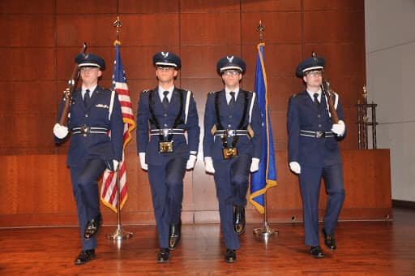
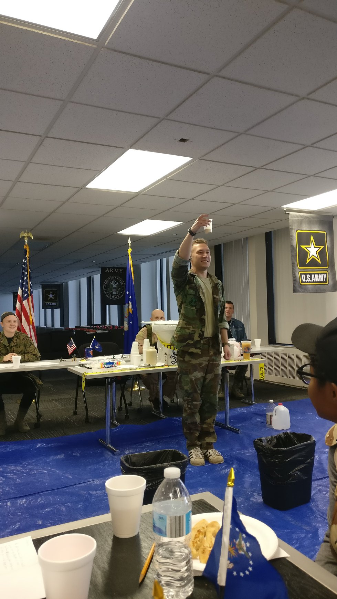
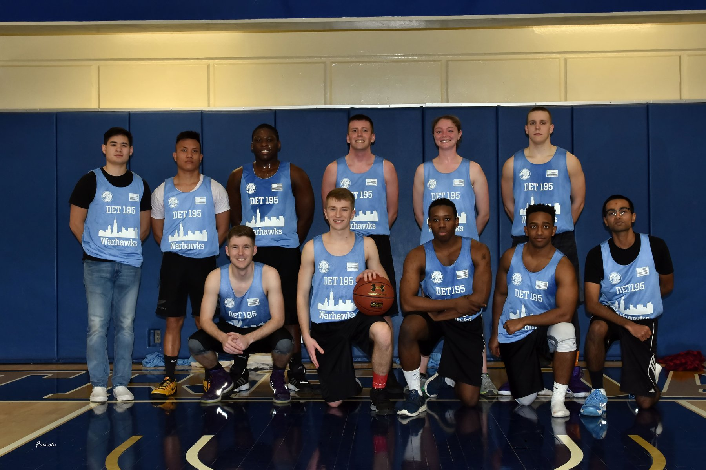
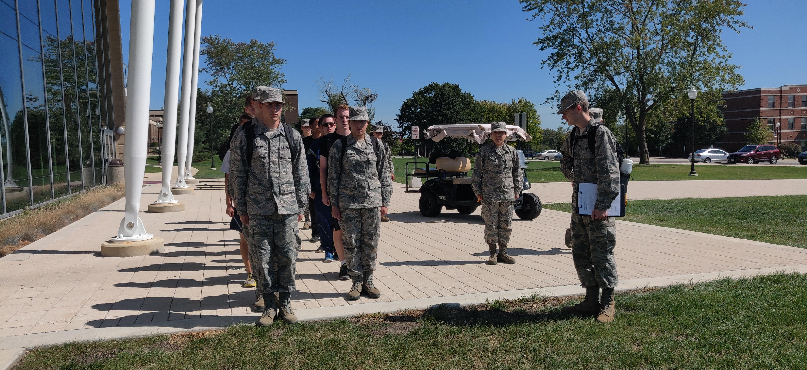
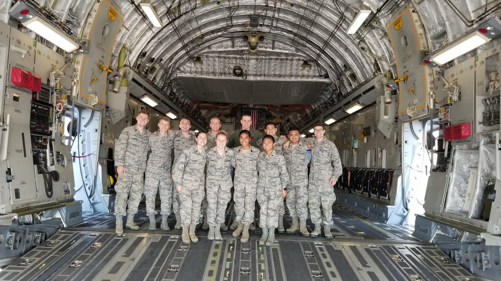

Leadership Lab (LLAB) is held once a week for two hours. The Juniors and Seniors in the detachment plan and execute each LLAB. During this time, they help train the Freshmen and Sophomores and prepare them for life in the Air Force. Cadets learn topics from marching, general military customs, as well as leadership skills. Detachment 195 is also incredibly lucky to have many guest speakers attend LLAB a couple of times a semester, furthering their professional development.

Physical Training is conducted in sessions every week to increase physical fitness and build teamwork within the detachment. Cadets form up to perform warm-up exercises and stretches followed by a workout organized by the cadet PFO (Physical Fitness Officer) followed by cool down exercises and stretches. Not only do PT sessions aid in increasing cadet performance for the PFA (Physical Fitness Assessment), PT helps to develop the physical readiness for any unknown physical demand in the future.
Each year has their own Aerospace Studies (AS) class. Freshmen and Sophomores have their class for one hour a week and focus on general military knowledge as well as the history of the Air Force. Juniors and Seniors attend AS class for 3 hours a week. During this time, they learn about leadership skills as well as skills necessary for active duty life in the Air Force.
The Arnold Air Society is a professional, honorary, service organization advocating the support of aerospace power. AAS is open to officer candidates in Air Force Reserve Officer Training Corps(AFROTC) and at the United States Air Force Academy (USAFA) and is formally affiliated with the Air Force Association (AFA). In addition to AFROTC or Academy commitments, AAS members must complete candidate training, attend meetings, and contribute to their respective Squadrons and ROTC detachments. Doing so enhances the officer candidate experience of cadets as well as builds stronger leadership, organizational, and professional skills.

The Detachment 195 Color Guard Team provides many different services for the greater Chicago area. These services include Color Guard, Sword Arch, Honor Guard, etc. Some examples of events we have participated in the past include weddings, Chicago Cubs baseball games, and WW II Memorial services.
Every year Det 195 hosts a Dining-Out for cadets, alumni, and guests. The Dining-Out is a formal dinner where all members of the detachment and their guests get to socialize with one another. Each Dining-Out has a sword arch for all distinguished guests, including the commissioning seniors. This is one of many Air Force traditions here at Det 195. Dining-Out is also a fun night of good food and company.

Every year we plan a Combat Dining-In (CDI). A CDI is the newest of the dining-in traditions and is especially popular amongst the cadets. The environment is very informal and the uniform for the event is typically an old, retired combat related military uniform. In the past, there have been water gun fights, a grog bowl, and comedic skits. CDI is always a fun time.
Every year, Det 195 attends the Flyin Irish ROTC Basketball Tournament at the University of Notre Dame. Cadets from Det 195 put togther a team and compete against other Detachments and ROTC Units from across the country. This a great opportunity to meet cadets from detachments and even other branches of the military.
FLX is an overnight opportunity cadets get to attend additional training to help advance their cadet careers. Cadets will spend a weekend training small unit tactics, drill, and dorm maintenance. This is a great training opportunity for cadets to perfect their AFROTC skills.
Cadets at Detachment 195 get the opportunity to visit an active duty Air Force base, at least once a semester. Cadets get the opportunity to talk to active duty officers and enlisted personell about their careers and daily lives. Its also an opportunity to see the different aspects of a base the USAF has to offer. Sometimes cadets may even be fortunate enough to get an incentive flight, or a security forces demonstration!
